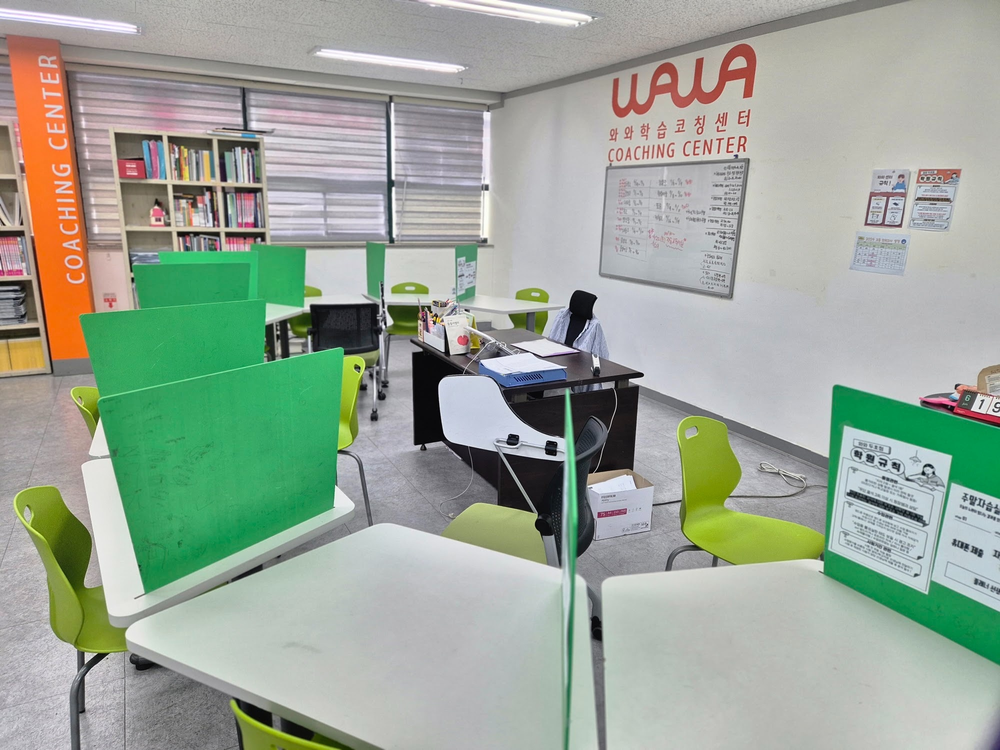
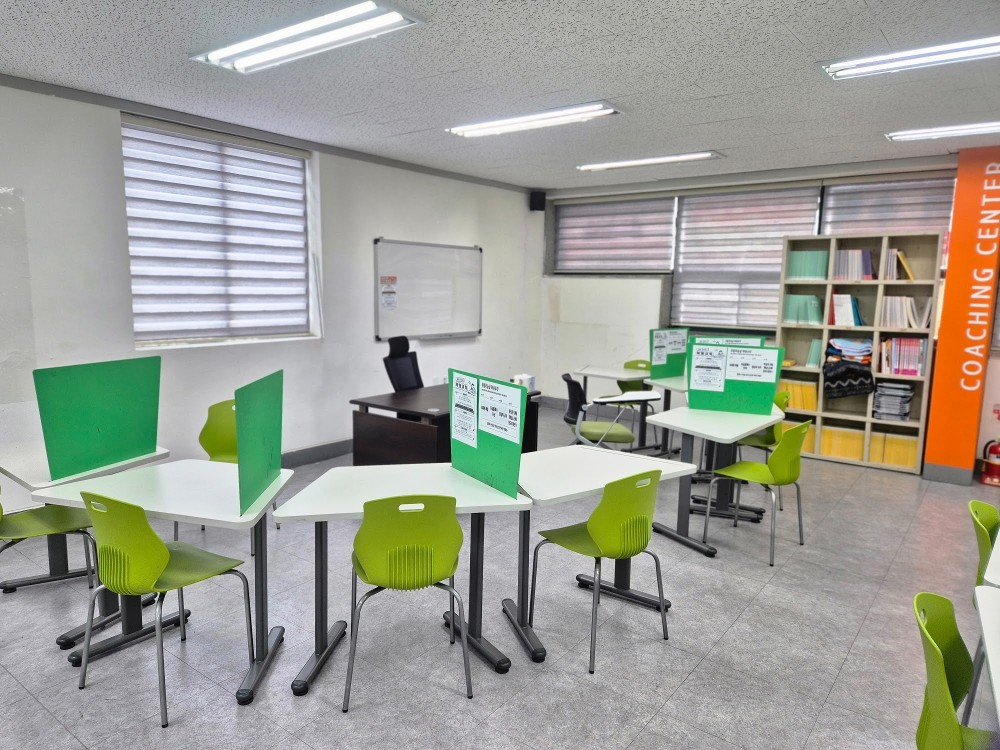
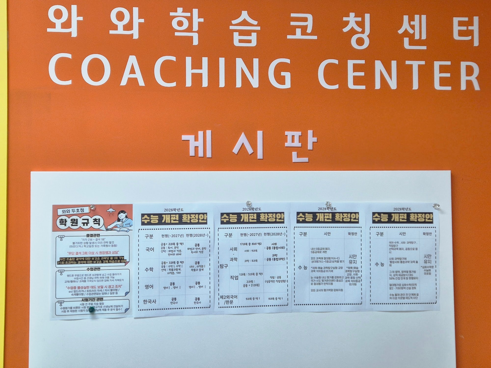
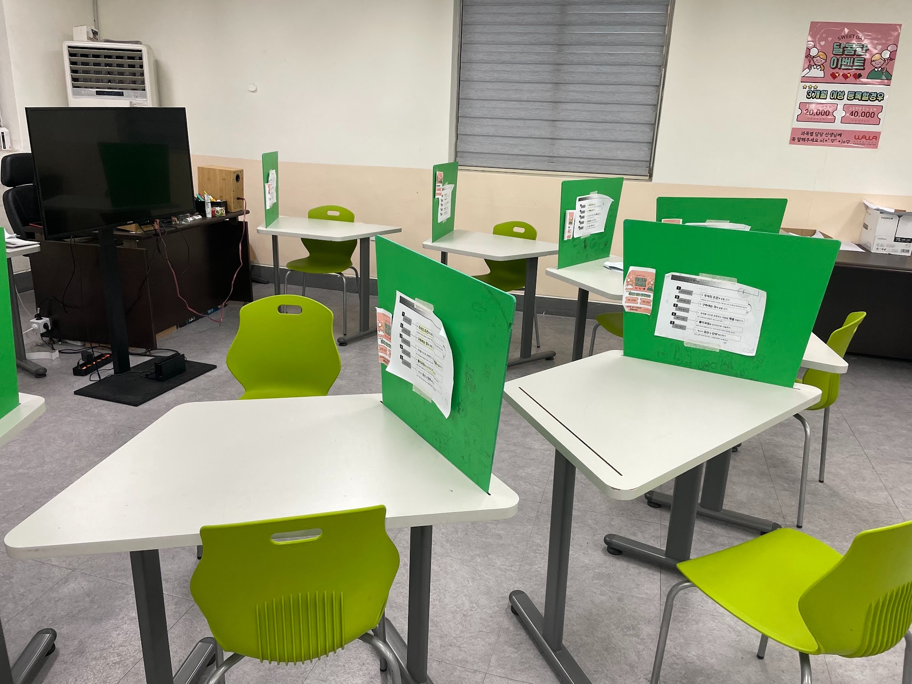

안녕하세요, 경북 포항시 북구 두호동 와와학습코칭 두호점입니다. 오늘은 여름방학 마무리와 2학기 내신·수능 대비 이야기를 학부모님께 전해드립니다.
개학이 코앞, 2학기는 지금 준비해야 합니다
두호고·포항여고·중앙고·중앙여고·대동고 학생들을 지도해 보면, 2학기는 1학기보다 진도가 빠르고 단원이 어렵습니다. 수학은 함수·도형, 과학은 화학·생명 단원처럼 까다로운 내용이 몰려 있어, 개학 후 따라잡으려 하면 이미 늦습니다. 남은 방학 동안 2학기 앞부분을 미리 잡아두는 것이 첫 시험을 지키는 열쇠입니다.

두호점의 2학기 대비 코칭
막연히 예습만 하는 것으로는 부족합니다. 두호점은 조용한 자습실에서 스스로 공부하는 힘을 키우며 이렇게 지도합니다.
- 수학 — 2학기 핵심 단원을 개념부터 선행하고, 틀린 유형을 분류해 약점을 좁히기 (포항 수학학원·수학 과외가 필요했던 학생에게)
- 영어 — 2학기 교과서 어휘·어법과 지문을 미리 익히고 서술형에 대비하기 (두호동 영어학원·영어 과외)
- 국어 — 비문학 독해와 문학 개념을 학교 지문 중심으로 다지기 (국어학원)
- 통합과학·통합사회 — 개념을 흐름으로 이해하고 수행평가 유형을 미리 연습하기 (과학학원)
이렇게 남은 방학을 보내면 2학기 첫 시험에서 출발선이 완전히 달라집니다.

고등학생은 2028 수능 개편까지 함께 봅니다
두호점 게시판에는 2028학년도 수능 개편 안내를 붙여 학생·학부모님이 입시 흐름을 놓치지 않도록 돕고 있습니다. 통합사회·통합과학이 수능에 도입되는 등 평가 방식이 달라지는 만큼, 고등학생은 내신과 함께 바뀌는 수능 구조를 미리 이해하고 준비하는 것이 중요합니다. 정확한 세부 사항은 학교 공지와 상담을 통해 안내해 드립니다.

방학 마무리가 2학기의 격차를 만듭니다
학기 중에는 진도에 쫓겨 앞서 준비할 여유가 없습니다. 개학 직전인 지금이야말로 2학기 내신을 미리 잡을 수 있는 결정적 시기입니다. 두호동·포항 북구 학부모님들, 우리 아이의 2학기 성적은 지금 이 방학에 시작됩니다.
와와학습코칭 두호점 학년별 공부 방법
포항 와와학습코칭(와와학습코칭 두호점)은 초등학생·중학생·고등학생 각 학년에 맞는 공부 방법으로 지도합니다. 조용한 자습실·공부방에서 스스로 공부하고, 영어학원·수학학원·과학학원·국어학원처럼 과목별 코칭까지 한곳에서 받을 수 있습니다.
- 초등학생 (초3·초4·초5·초6) — 스스로 공부하는 습관과 기초 개념 잡기. 두호동 초등 수학학원·영어학원·공부방을 찾으신다면.
- 중학생 (중1·중2·중3) — 전과목 내신 대비와 고등 준비, 오답 정리와 서술형 훈련. 포항 중등 수학학원·영어학원·과학학원·국어학원.
- 고등학생 (고1·고2) — 내신과 수능을 함께 잡는 자기주도학습 플래닝과 취약 과목 집중. 포항 고등 영수학원·종합학원·자기주도학습.
와와학습코칭 두호점 위치와 주변
- 🏢 위치 — 경북 포항시 북구 용두산길 32 3층 (두호동)
- 🏘️ 인근 — 두호동 일대 아파트 단지와 두호주공·환호해맞이 지역에서 가깝습니다.
📍 와와학습코칭 두호점 센터 정보 자세히 보기 — 주소·전화·인근 학교 안내를 확인하실 수 있습니다.
와와학습코칭 두호점 인근 학교
포항 와와학습코칭(와와학습코칭 두호점)은 인근 학교 학생들의 내신·수능을 함께 준비합니다. 아래 학교에 다니는 학생이라면 영어학원·수학학원·과학학원·국어학원을 따로 찾을 필요 없이, 가까운 우리 센터에서 과목별 1:1 자기주도학습 코칭·과외를 받을 수 있습니다.
- 인근 초등학교 — 두호초등학교·두호남부초등학교·포항동부초등학교·장량초등학교 영어학원·수학학원·과학학원·국어학원·공부방
- 인근 중학교 — 환호여자중학교·대도중학교 영어 과외·수학 과외·과학학원·국어학원
- 인근 고등학교 — 두호고등학교·포항여자고등학교·중앙고등학교·중앙여자고등학교·대동고등학교·장성고등학교 영어학원·수학학원·내신·과외